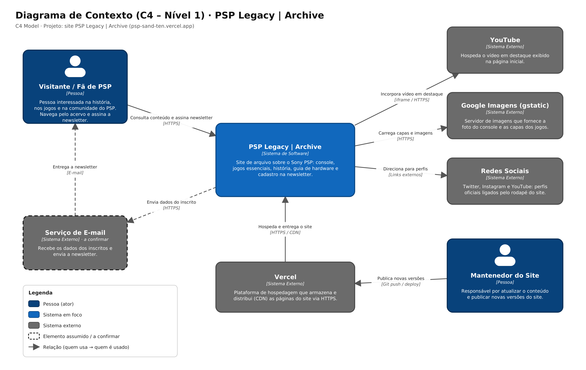
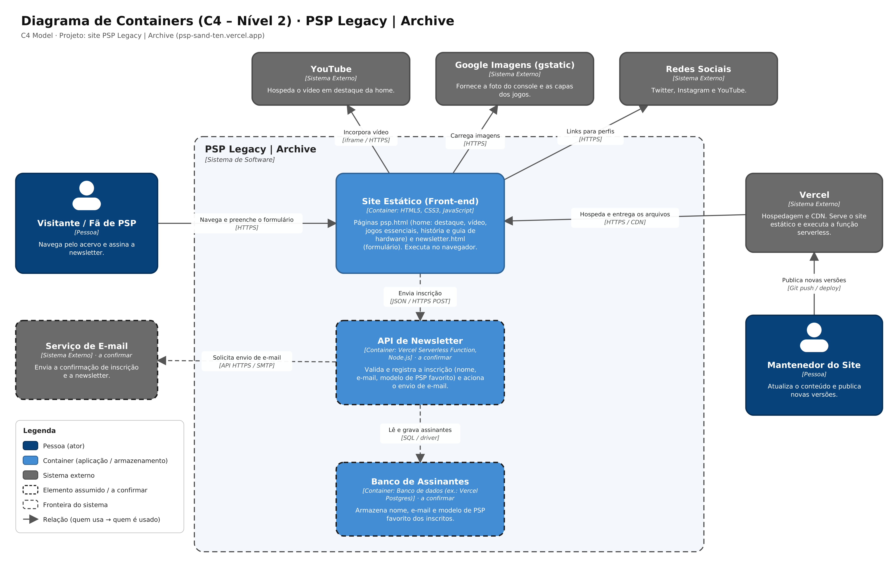

Arquitetura
A arquitetura do PSP Legacy | Archive foi modelada com o C4 Model, usando os dois primeiros níveis:
- Nível 1 (Contexto): o sistema no centro, com as pessoas e os sistemas externos que se relacionam com ele.
- Nível 2 (Containers): o que existe dentro do sistema (aplicação, API, banco) e a tecnologia de cada parte.
Elementos tracejados
O site publicado hoje é estático. Os elementos com borda tracejada nos diagramas (Serviço de E-mail,
API de Newsletter e Banco de Assinantes) são o caminho previsto para o cadastro da newsletter, descrito na
página de Regras e Fluxos.
Nível 1: Diagrama de Contexto

Pessoas (atores)
| Ator |
Descrição |
| Visitante / Fã de PSP |
Pessoa interessada na história, nos jogos e na comunidade do PSP. Navega pelo acervo e assina a newsletter. |
| Mantenedor do Site |
Responsável por atualizar o conteúdo e publicar novas versões. |
Sistema em foco
| Sistema |
Descrição |
| PSP Legacy | Archive |
Site de arquivo sobre o Sony PSP: console, jogos essenciais, história, guia de hardware e cadastro na newsletter. |
Sistemas externos
| Sistema |
Papel na solução |
| Vercel |
Hospeda e distribui (CDN) as páginas do site via HTTPS. |
| YouTube |
Hospeda o vídeo em destaque exibido na página inicial. |
| Google Imagens (gstatic) |
Fornece a foto do console e as capas dos jogos. |
| Redes Sociais |
Twitter, Instagram e YouTube, acessados por links no rodapé. |
| Serviço de E-mail (a confirmar) |
Recebe os dados dos inscritos e envia a newsletter. |
Relacionamentos
| Origem |
Destino |
Descrição |
Tecnologia |
| Visitante |
PSP Legacy |
Consulta conteúdo e assina a newsletter |
HTTPS |
| Mantenedor |
Vercel |
Publica novas versões |
Git push / deploy |
| Vercel |
PSP Legacy |
Hospeda e entrega o site |
HTTPS / CDN |
| PSP Legacy |
YouTube |
Incorpora o vídeo em destaque |
iframe / HTTPS |
| PSP Legacy |
Google Imagens |
Carrega capas e imagens |
HTTPS |
| PSP Legacy |
Redes Sociais |
Direciona para os perfis |
Links externos |
| PSP Legacy |
Serviço de E-mail (a confirmar) |
Envia dados do inscrito |
HTTPS |
| Serviço de E-mail (a confirmar) |
Visitante |
Entrega a newsletter |
E-mail |
Nível 2: Diagrama de Containers

Containers
| Container |
Tecnologia |
Responsabilidade |
| Site Estático (Front-end) |
HTML5, CSS3, JavaScript |
Páginas psp.html (home com destaque, vídeo, jogos essenciais, história e guia de hardware) e newsletter.html (formulário de inscrição). Executa no navegador do visitante. |
| API de Newsletter (a confirmar) |
Vercel Serverless Function, Node.js |
Valida e registra a inscrição (nome, e-mail e modelo de PSP favorito) e aciona o envio de e-mail. |
| Banco de Assinantes (a confirmar) |
Banco de dados (ex.: Vercel Postgres) |
Armazena nome, e-mail e modelo de PSP favorito dos inscritos. |
Relacionamentos
| Origem |
Destino |
Descrição |
Tecnologia |
| Visitante |
Site Estático |
Navega e preenche o formulário |
HTTPS |
| Mantenedor |
Vercel |
Publica novas versões |
Git push / deploy |
| Vercel |
Site Estático |
Hospeda e entrega os arquivos |
HTTPS / CDN |
| Site Estático |
YouTube |
Incorpora o vídeo |
iframe / HTTPS |
| Site Estático |
Google Imagens |
Carrega imagens |
HTTPS |
| Site Estático |
Redes Sociais |
Links para os perfis |
HTTPS |
| Site Estático |
API de Newsletter |
Envia a inscrição |
JSON / HTTPS POST |
| API de Newsletter |
Banco de Assinantes |
Lê e grava assinantes |
SQL / driver |
| API de Newsletter |
Serviço de E-mail |
Solicita o envio de e-mail |
API HTTPS / SMTP |
Decisões de arquitetura
- Site estático: o conteúdo (jogos, história, guia de hardware) muda pouco, então não precisa de servidor de aplicação. O deploy fica simples e as páginas são entregues pela CDN.
- Hospedagem na Vercel: cada atualização enviada ao repositório vira uma nova versão do site, sem precisar mexer em servidor.
- YouTube e Google Imagens: o vídeo e as imagens vêm de serviços externos, então o projeto não guarda mídia pesada.
Arquivos para download